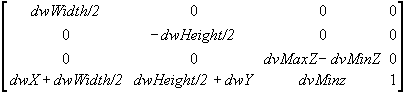

The dimensions used in the X, Y, Width, and Height members of the D3DVIEWPORT8 structure for a viewport define the location and dimensions of the viewport on the render-target surface. These values are in screen coordinates, relative to the upper-left corner of the surface.
Microsoft® Direct3D® uses the viewport location and dimensions to scale the vertices to fit a rendered scene into the appropriate location on the target surface. Internally, Direct3D inserts these values into a matrix that is applied to each vertex:

This matrix simply scales vertices according to the viewport dimensions and desired depth range and translates them to the appropriate location on the render-target surface. The matrix also flips the y-coordinate to reflect a screen origin at the top-left corner with y increasing downward. After this matrix is applied, vertices are still homogeneous—that is, they still exist as [x,y,z,w] vertices—and they must be converted to non-homogeneous coordinates before being sent to the rasterizer. This is performed by way of simple division, as discussed in Rasterization.
Note The viewport scaling matrix incorporates the MinZ and MaxZ members of the D3DVIEWPORT8 structure to scale vertices to fit the depth range [MinZ, MaxZ]. This represents different semantics from previous releases of Microsoft® DirectX®, in which these members were used for clipping.
For more information, see Viewport Rectangle and Clipping Volumes. Applications typically set MinZ and MaxZ to 0.0 and 1.0 to cause the system to render to the entire depth range. However, you can use other values to achieve certain affects. You might set both values to 0.0 to force all objects into the foreground, or set both to 1.0 to render all objects into the background.